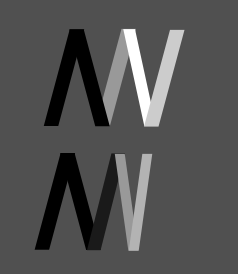

Working with 2D Drawings and Modelling
This page is for documenting the CAD assignment, and how I used 2D raster and vector software as well as 3D CAD software.
Difference between Raster VS Vector
Vector graphics also known as scalable vector graphics (SVG), are made up of anchored dots, and are connected by lines and curves. Since they are not based on pixels, they can scaled indefinitely, and still retain its image quality. Their lines are sharp, without any loss in quality or detail, no matter what size. This also means the graphic can be scaled based on screen size and number of available pixels.Vector graphics are commonly found in logos, and 2D/3D animation.
Raster graphics and made up of pixels, and tiny dots. Pixels appear like little squares when the image is zoomed in or enlarged. These images are created by digital cameras, by scanning images into a computer or with raster-based software. Each image can only contain a fixed number of pixels, which determines the quality of the image,also known as resolution. Resolution can be increased with more pixels, but the file size would increase as well.
Raster graphics are commonly found in photography, and print materials.
2D Raster
We used GIMP (GNU Image Manipulation Program) to edit an image. I used it to remove the background out of my profile photo as shown below (darker coloured background is used to differentiate easily).
| Before | After |
|---|---|
 |
.png) |
2D Vector
I used Inkscape to make a simple logo with our initials. I used it to create a simple logo with my initials. The darker parts are the letter M, and the lighter parts are the letter N.

3D CAD Software
We used Fusion360/Inventor to create some simple shapes and 3D models.
| Blueprint | Inventor Part |
|---|---|

Exercise 1 |
|

Exercise 2 |
|

Exercise 3 |